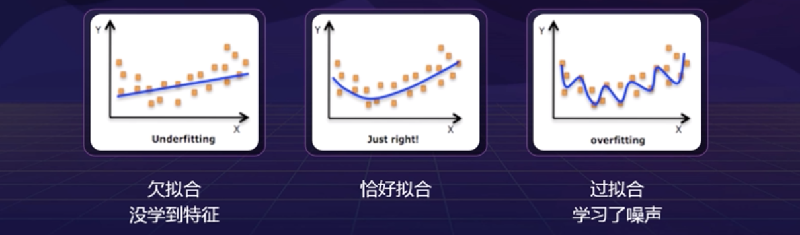
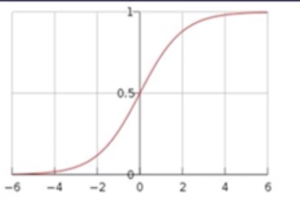

深度学习预备知识
学习算法
机器学习(包括深度学习分支)是研究“学习算法”的门学问。所谓“学习”是指：对于某类任务和性能度量P，一个计算机程序在T上以P衡量的性能随着经验E自我完善，那么我们称这个计算机程序在从经验E学习。经验E（Experience）其实在我们的算法中就是数据；任务T（Task）就是我们建立的模型，比如说分类任务，聚类任务和回归任务等等；最后一个就是性能度量P（Performance），其实就是我们最后要对这个算法的测量，度量算法的好坏。
数据E
数据集，训练集，测试集。
学得的模型适用于新样本的能力称之为泛化能力
- 误差：学习到的模型在样本上的预测结果和样本真是结果之间的差，又分为训练误差和泛化误差。训练误差就是模型在训练集上所产生的误差，泛化误差是在新样本上的误差。
- 欠拟合：训练误差大
- 过拟合：泛化误差大

任务T
下面介绍两种常见的机器学习任务：
分类:计算机程序需要指定输入属于k类中的哪一类。为了完成这个任务,学习算法通常会输出一个函数f:R^n→(1,2…,k)。比如计算机视觉中的图像分类算法解决的就是一个分类任务。
回归:这类任务中，计算机程序会对给定输入预测输出数值。学习算法通常会输出一个函数f:R^n→R，这类任务的—个示例是预测投保人的索赔金额(用于设置保险费)，或者预测证券末来的价格。
分类的输出是离散的类别值，而回归的输出是连续数值。
性能度量P
机器学习常用算法
机器学习的分类：监督学习，无监督学习，半监督学习，强化学习。
监督：监督的有无就好像是学生学习有无老师指导，反映在机器学习中就是用于学习的数据的标签的有无。另外半监督学习就是利用了监督学习与无监督学习来对数据进行标记，节省人力来给数据做标签。
强化学习：学习系统从环境到行为映射的学习，以使奖励信号函数值达到最大。强化学习不同于连接主义学习中的监督学习。主要表现在教师的信号上，强化学习由环境提供强化信号，是对产生动作的好坏做一种评价，而不是告诉强化学习系统如何去产生正确的动作。
具体算法：
线性回归（Linear regression）：线性回归是利用数理统计中的回归分析，来确定两种或两种以上的变量间相互依赖的定量关系的一种统计分析方法。
逻辑回归：逻辑回归模型是一种分类模型，用来解决分类问题。
$$
P(Y=1 | x)=\frac{e^{w x+b}}{1+e^{w x+b}}
$$$$
P(Y=0 | x)=\frac{1}{1+e^{w x+b}}
$$
其中w为权重，b为偏置，其中的$wx+b$看成是对x的线性函数。在这里这两个概率值哪一个大，就可以说x被分到哪一类。
决策树（decision tree）：是一个树结构（可以是二叉树或非二叉树）。其每个非叶节表示一个特征属性上的测试，每个分支代表这个特征属性在某个值域上的输出，而每个叶节点存放一个类别。决策树的三种经典方法：ID3，C4.5，CART算法。
支持向量机（support vector machine，SVM）：是一种二分类模型，它的基本模型是定义在特征空间上的间隔最大的线性分类器。SVM还包括核技巧，这使它成为实质上的非线性分类器。支持向量机的学习算法是求解凸二次规划的最优化算法。这里简单的介绍一下，核技巧（kernel tricky）其实是和SVM完全两个正交的概念，其实核技巧是一个非常纯粹的数学方法。因为这个技巧不仅应用在SVM中，还有其他领域也有应用。它解决了数据映射到高维空间之后点积计算过于复杂的问题。
给定两个向量$x_i$和$x_j$，我们的目标是要计算他们的内积$I=<x_{i}, x_{j}>$。现在假设我们通过某种非线性变换：
$$
\Phi : x \rightarrow \phi(x)
$$
把他们映射到某一个高维空间中去，那么映射后的向量就变成：$\phi\left(x_{i}\right)$ 和 $\phi\left(x_{j}\right)$，映射后的内积就变成了：$I^{\prime}=<\phi\left(x_{j}\right), \phi\left(x_{j}\right)>$。现在该如何计算映射后的内积呢？传统方法是先计算映射后的向量$\phi\left(x_{i}\right)$ 和 $\phi\left(x_{j}\right)$，然后再计算它俩的内积。但是这样做计算很复杂，因为映射到高维空间后的数据维度很高。比如，假设$x_i$和$x_j$在映射之后都是一个1×10000维的向量，那么他们的内积计算就需要做10000次加法操作和10000次乘法操作，显然复杂度很高。于是，数学家们就想出一个办法：能不能在原始空间找到一个函数$K\left(x_{i}, x_{j}\right)$使得$K\left(x_{i}, x_{j}\right)=<\phi\left(x_{j}\right), \phi\left(x_{j}\right)>$呢？如果这个函数存在，那么我们只需要在低维空间里计算函数$K\left(x_{i}, x_{j}\right)$的值即可，而不需要先把数据映射到高维空间，再通过复杂的计算求解映射后的内积了。庆幸的是，这样的函数是存在的。这样一来计算的复杂度就大大降低了，这种简化计算的方法被称为核技巧（The Kernel Trick），而函数$K$就是核函数（Kernel Function）。朴素贝叶斯（Naive Bayes）：是基于贝叶斯定理与特征条件独立假设的分类方法。
kNN：K最邻近（K-Nearest Neighbor， KNN）分类算法的思路是：如果一个样本在特征空间中以k为半径的圆（或超圆）中的n个最相似（即特征空间中最邻近）的样本中的大多数属于某一个类别，则该样本也属于这个类别。这里我们将k成为超参数。
通常， 在分类任务中可使用“投票法”即选择这k个样本中出现最多的类别标记作为预测结果；在回归任务中时使用“平均法” ，即将这k个样本的实值输出标记的平均值作为预测结果；还可基于距离远近进行加权平均或加权投票，距离越近的样本权重越大。k是一个重要参数，当 k取不同值时，分类结果会有显著不 同 。另一方面，若采用不同的距离计算方式？则找出的“近邻”可能有显著差别，从而也会导致分类结果有显著不同。
超参数和验证集
学习模型中一般有两种参数，一种参数是可以从学习中得到，还有一种无法靠数据里面得到，只能靠人的经验来设定，这类参数就叫做超参数。
模型超参数的特征：
- 模型超参数常应用于估计模型参数的过程中。
- 模型超参数通常由实践者直接指定。
- 模型超参数通常可以使用启发式方法来设置。
- 模型超参数通常根据给定的预测建模问题而调整。
模型超参数举例：
- 训练神经网络的学习速率，迭代次数，批次大小，激活函数，神经元的数量。
- 支持向量机的C和$\sigma$超参数。
- kNN算法中的K。
超参数搜索的一般过程：
- 将数据集分成训陈练集、验证集、测试集。（训练集和测试集不能够交叉，验证集是训练集的一小部分）
- 在训练集上根据模型的性能指标对模型参数进行优化。
- 在验证集上根据模型的性能指标对模型的超参数进行搜索。
- 步骤2和步骤3交替迭代进行，最终确定模型的参数和超参数，并在测试集中评价模型的优劣。
交叉验证：是用来验证分类器的性能的一种统计分析方法，基本思想是把在某种意义下将原始数据进行分组，一部分作为训练集，另部分作为验证集，首先用训练集对分类器进行训练再利用验证集来测试训练得到的模型，以此来做为评价分类器的性能指标。
k-折交叉验证（k-CV）：
- 将原始数据分成k组（一般是均分）。
- 将每个子集数据分别做一次验证集，其余的$k-1$组子集数据作为训练集，这样会得到k个模型。
- 用这k个模型最终的验证集的分类准确率的平均数作为此k-CV下分类器的性能指标。
参数估计
设又一个统计总体，总体的分布函数为$F(x,\theta)$，其中$\theta$为未知参数，现在从该总体抽样，得到样本$x_1, x_2, \dots, x_n$，要一句该样本对参数$\theta$作出估计得到$\hat{\theta}$，或者估计$\theta$的某个已知函数$g(\theta)$，这类问题成为参数估计。参数估计分为点估计和区间估计。
对于参数估计，统计学界的两个学派分别提供了不同的解决方案：频率主义学派（Frequentist）认为参数虽然未知，但确实客观存在的固定值，因此，可以通过优化似然函数等准则来确定参数值；贝叶斯学派（Bayesian）则认为参数是未观察到的随机变量，其本身也可有分布，因此，可假定参数服从一个先验分布，然后基于观测到的数据来计算参数的后验分布。
点估计量：我们需要构造出适当样本的函数$T\left(\mathrm{x}_{1}, \mathrm{x}_{2}, \ldots, \mathrm{x}_{\mathrm{n}}\right)$，每当有了样本，就代入到函数中算出一个值，用来作为未知参数的估计值，$T\left(\mathrm{x}_{1}, \mathrm{x}_{2}, \ldots, \mathrm{x}_{\mathrm{n}}\right)$称为参数的点估计量。这里假设我们要估计的未知参数为一组数据的平均值，那么现在的问题是：为什么我们要用样本的均值来估计总体的均值呢？或者我们可以使用什么样的估计量去估计总体的均值？我们怎样评价估计量的好坏？
根据这些问题我们就引出了下面衡量统计量的标准：
- 无偏性：估计的变差被定义为$\operatorname{bias}(\hat{\theta})=E(\hat{\theta})-\theta$，如果这个值等于0，那么我们就可以说估计量$\theta$是无偏的。如果$\text { limbias }(\hat{\theta})=0$，那么我们可以说估计量是渐进无偏的。因为均值符合估计的无偏性，所以可以用均值来估计总体的均值。
- 有效性：设$\hat{\theta}_1$与$\hat{\theta}_2$是$\theta$的两个无偏估计量，若$D(\hat{\theta}_1)<D(\hat{\theta}_2)$，则称$\hat{\theta}_1$比$\hat{\theta}_2$有效。
- 一致性（相合性）：在概率P的意义下，$\hat{\theta} \rightarrow \theta(n \rightarrow \infty)$，即对于$\forall \epsilon>0$，有$\lim _{n \rightarrow \infty} P(|\hat{\theta}-\theta |>\varepsilon )=0$。也就是说明估计量与原始量的差小于一个非常小的值的概率为0的话，那么我们就说这个估计符合相合性。
最大似然估计（MLE）
最大似然估计的基本思想：在某个已知结果的情况下，那么我们自然会认为哪个参数能使得这个结果发生的概率最大，就可以认为这个参数的估计值是哪个值。
最大似然估计原理：设$X_{1}, X_{2}, \ldots, X_{n}$是取自总体X的一个样本，样本的联合密度或联合分布律为$f\left(x_{1}, x_{2}, \cdots, x_{n} ; \theta\right)$。定义似然函数为
$$
L(\theta)=f\left(x_{1}, x_{2}, \cdots, x_{n} ; \theta\right)
$$
此处，似然函数就是样本的联合分布律。其中$x_{1}, x_{2}, \cdots, x_{n}$是样本的观察值；$L(\theta)$看作是参数为$\theta$的函数。它可以作为$\theta$将以多大可能产生样本值$x_{1}, x_{2}, \cdots, x_{n}$的一种度量。
联合分布律：独立变量的联合分布律（联合密度函数）就是他们自己本身密度函数（分布函数）的乘积。
那么现在我们想要求得的就是如何使得这个似然函数能够取得最大值，那么我们就可以认为其取得最大值的时候，$\theta$的值就是最大似然估计值。用数学来表示就是：
$$
\hat{\theta}=\max _{\theta} L(\theta)
$$
这里我们称$\hat{\theta}$为$\theta$的最大似然估计值。而相应的统计量$\hat{\theta}\left(X_{1} \ldots \ldots X_{n}\right)$称为$\theta$的最大似然估计量。
下面我们举一个例子：
例：假设$X_{1}, X_{2}, \ldots, X_{n}$是取自总体二项分布$X\sim B(1,p)$的一个样本，求参数$p$的最大似然估计量。
解：似然函数可以写成
$$
L(p)=f\left(x_{1}, x_{2}, \cdots, x_{n} ; p\right)=\prod_{i=1}^{n} p^{x_i}(1-p)^{1-x_i}=p^{\sum_{i=1}^n x_i}(1-p)^{n-\sum_{i=1}^n x_i}
$$
我们会发现这个式子非常的复杂，一般的做法是我们对这个函数两边都进行取对数运算，这里我们取自然对数，有对数似然函数
$$
\ln L(p)=\sum_{i=1}^{n} x_{i} \ln (p)+\left(n-\sum_{i=1}^{n} x_{i}\right) \ln (1-p)
$$
这样我们就可以将原式中的指数放下来，我们再对这个对数似然函数对p求导数并令其等于0，有：
$$
\frac{d \ln L(p)}{d p}=\frac{1}{p} \sum_{i=1}^{n} x_{i}-\frac{1}{1-p}\left(n-\sum_{i=1}^{n} x_{i}\right)=0
$$
我们可以得到$\hat{p}=\bar{n}$。从而$p$的最大似然估计量为：$\hat{p}\left(X_{1}, X_{2}, \dots, X_{n}\right)=\frac{1}{n} \sum_{i=1}^{n} X_{i}=\overline{X}$。
贝叶斯估计
$$
P(h | D)=\frac{P(hD)}{P(D)}=\frac{P(D | h) P(h)}{P(D)}
$$
极大后验概率假设：$P(h | D)$是假设$h$的后验概率，使$P(h | D)$最大化的假设$h$，称为极大后验（maximum a posteriori, MAP）假设。形式化的，MAP假设$h_{MAP}$满足：
$$
h_{M A P}=\underset{h \in H}{\operatorname{argmax}} P(h | D)=\underset{h \in H}{\operatorname{argmax}} \frac{P(D | h) P(h)}{P(D)}=\underset{h \in H}{\operatorname{argmax}} P(D | h) P(h)
$$
在实际使用中，我们往往不能得到各个假设的后验概率，我们只能认为假设空间中的所有假设都是等可能的，此时，$P(h)$可以认为是常数，有
$$
h_{M A P}=\underset{h \in H}{\operatorname{argmax}} P(D | h) P(h)=\underset{h \in H}{\operatorname{argmax}} P(D | h)=h_{M L}
$$
其中，$P(D|h)$常被称为给定$h$时数据$D$的似然度，因此，使得$P(D|h)$最大的假设吃过哪位极大似然假设$h_{ML}$。当假设空间中的假设都是等可能的假设时，$h_{MAP}=h_{ML}$。那么我们就可以总结一下极大似然与极大后验的区别就是：极大似然求的是P在h发生条件下D发生的概率，而极大后验则是考虑了h的一些因素，比如说h是不是服从于某种分布。